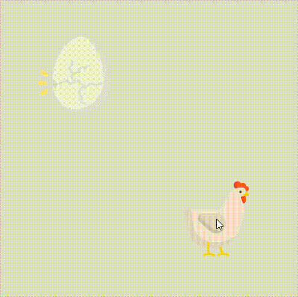
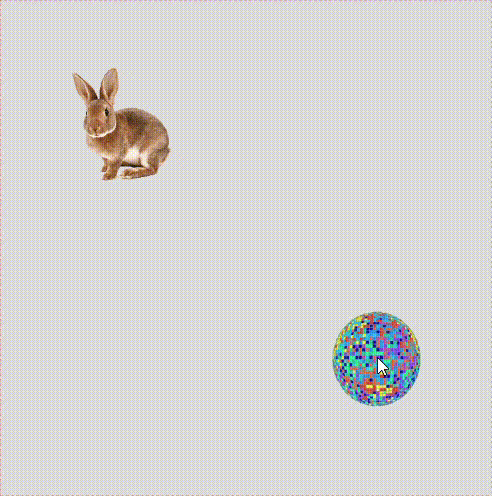
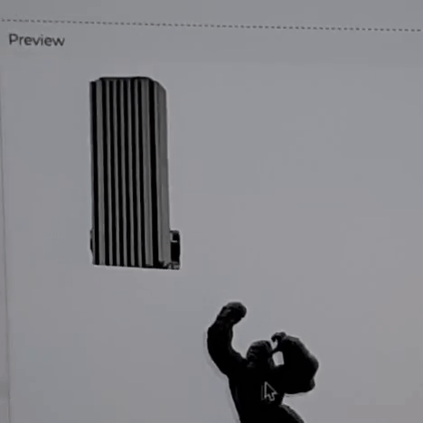
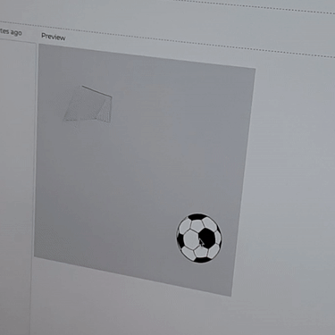
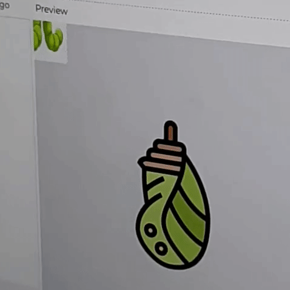

Hay dos cosas que quiero destacar de lo que ha sido mi trabajo en este año: La primera de ellas es la organización de un ciclo de charlas virtuales en el marco del lanzamiento de la electiva de Videojuego y Narrativa Interactiva, en el cual participaron seis invitados y que tuvo como propósito inaugurar e impulsar los videojuegos como medio de creación de particular interés para los estudiantes del programa y de creciente relevancia en el campo de las Narrativas Digitales. La segunda, fue la participación en la alineación curricular, en la cual asumí el liderazgo del Lenguaje Multimedia y Transmedia. Comparto aquí un documento que realicé en el que consigno los resultados de aprendizaje que acordamos entre los profesores participantes y algunos principios que considero que pueden orientar la enseñanza en este lenguaje. Adicional a esto, participé en la alineación curricular del Lenguaje Sonoro, bajo el liderazgo de mi colega Charlotte de Beauvoir.
Este ciclo no hubiera sido posible sin el apoyo de la Oficina de Comunicaciones y Gestión Cultural de la Facultad de Artes y Humanidades.
Para conocer más sobre la charla ingresa al siguiente enlace: https://ceper.uniandes.edu.co/evento/charla-introduccion-a-los-videojuegos-expresivos/
Para conocer más sobre la charla ingresa al siguiente enlace: https://ceper.uniandes.edu.co/evento/charla-re-imaginando-interfaces-interactivas-muestra-de-videojuegos/
Para conocer más sobre la charla ingresa al siguiente enlace: https://ceper.uniandes.edu.co/evento/charla-arte-naturaleza-y-subjetividad-para-el-diseno-de-interfaces-de-juego-experimentales/
Para conocer más sobre la charla ingresa al siguiente enlace: https://ceper.uniandes.edu.co/evento/charla-de-la-deconstruccion-cultural-a-la-reinvencion-estetica-el-proceso-creativo-de-laidaxai-y-el-arbol-negro/
Para conocer más sobre la charla ingresa al siguiente enlace: https://ceper.uniandes.edu.co/evento/charla-narrativas-digitales-producciones-transmedia-metaverso-y-videojuegos/
Para conocer más sobre la charla ingresa al siguiente enlace: https://ceper.uniandes.edu.co/evento/charla-otros-publicos-otros-juegos/
Documento elaborado junto a Charlotte de Beauvoir, profesora lider del lenguaje, el cual fue compartido a todos los profesores que tenían a su cargo un curso en esta línea.
El taller tuvo como objetivo brindar un acercamiento a los participantes a las narrativas digitales desde la programación creativa, ofreciento una inmersión práctica en el tipo de actividades que se realizan en la electiva de Programación Creativa. Para ello, preparé un par de ejemplos, que sirvieron de plantillas para que cada uno pudiera crear su propia versión. El ejemplo se basa en dos recursos comunes en las interfaces gráficas en general, incluyendo por supuesto proyectos basados en la web y algunos videojuegos: 1) Drag & Drop (arrastrar y soltar) y 2) Reacciones a partir de colisiones entre objetos.
Gallina - Huevo - Pollo
Bola de disco - Conejo - Bad Bunny
Dado el tiempo limitado del taller, esta dinámica permitía que apropiarar un ejemplo de una manera ágil para contar algo distinto y reconocieran el uso de la programación en las narrativas digitales.
1
2
3
